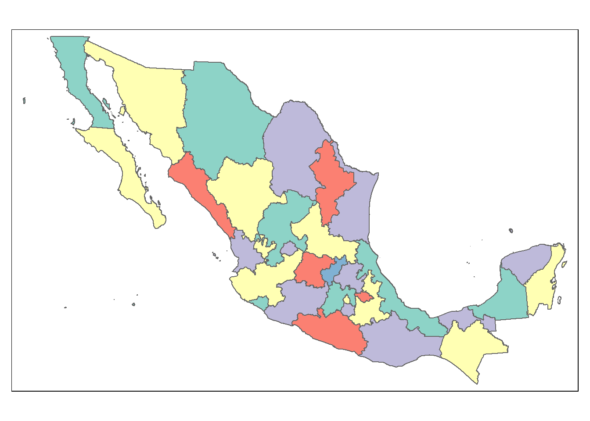

Exploración datos Censo México 2020
2021-09-11
Capítulo 1 Importación de datos cartográficos
- **Marco Geoestadístico
El Marco Geoestadístico es un sistema único y de carácter nacional diseñado por el INEGI, el cual presenta la división del territorio nacional en diferentes niveles de desagregación para referir geográficamente la información estadística de los censos y encuestas institucionales y de las Unidades del Estado, que se integra al Sistema Nacional de Información Estadística y Geográfica (SNIEG).
https://inegi.org.mx/temas/mg/#Descargas
Contenido
Mapa con las coordenadas estatles. Marco Geoestadístico, septiembre 2019 2019 3.11 GB https://inegi.org.mx/contenidos/productos//prod_serv/contenidos/espanol/bvinegi/productos/geografia/marcogeo/889463776079_s.zip
Ficha de información.
https://inegi.org.mx/app/biblioteca/ficha.html?upc=889463776079
Los nombres de archivos se conforman con las claves 00 y la capa con sufijos descriptivos del contenido del archivo: Donde:
- 00ent Polígonos de Áreas Geoestadísticas Estatales
- 00mun Polígonos de Áreas Municipales
- 00a Polígonos de Áreas Geoestadísticas Básicas Urbanas y Rurales
- 00l Polígonos de Localidades Urbanas y Rurales amanzanadas
- 00lpr Puntos de Localidades Rurales amanzanadas y no amanzanadas
Marco Geoestadístico. Censo de Población y Vivienda 2020 2020 2.65 GB https://inegi.org.mx/contenidos/productos//prod_serv/contenidos/espanol/bvinegi/productos/geografia/marcogeo/889463807469_s.zip
1.0.1 Cambio de acceso estatal en:
https://www.inegi.org.mx/programas/ccpv/2020/default.html#Datos_abiertos
Ficha de información https://inegi.org.mx/app/biblioteca/ficha.html?upc=889463807469
Se descarga y se descomprime localmente Se crea una carpeta para los datos geográficos
#La ruta para el mapa de México se toma del Marcogeostadístico nacional
rutam<-"D:/Documents/Claudia/Midropbox/Investigacion y escritos/Marcogeoestadisticonacional/mg_sep2019_integrado/conjunto_de_datos"
#Lectura del mapa a nivel de entidades
basemapan <- readOGR(rutam,"00ent", use_iconv = TRUE, encoding = "latin1")## OGR data source with driver: ESRI Shapefile
## Source: "D:\Documents\Claudia\Midropbox\Investigacion y escritos\Marcogeoestadisticonacional\mg_sep2019_integrado\conjunto_de_datos", layer: "00ent"
## with 32 features
## It has 3 fields#presentación de la información de las entidades
tm_shape(basemapan) +
tm_polygons(col = "MAP_COLORS",
minimize = TRUE)
1.0.2 Para determinar las variables e indicadores
En el sitio https://www.inegi.org.mx/programas/ccpv/2020/default.html#Datos_abiertos
Se descarga de los “Principales resultados por localidad (ITER)” el de los Estados Unidos Mexicanos 2020" que es un archivo comprimido con el nombre de iter_00_cpv2020_csv.zip
Cuando se descomprime en la carpeta del diccionario_datos se encuentra el archivo con el nombre de diccionario_datos_iter_00CSV20.csv
Se creó un archivo con las variable para poderlas parametrizar en un archivo que lleva el nombre de variablescensales.csv
#La ruta para el archivo que tiene las variables censales y su descripción
rutvar<-"D:/Documents/Claudia/Midropbox/Investigacion y escritos"
variablescensales<-read.csv(paste0(rutvar,"/Censo2020/","variablescensales.csv"),header=TRUE, sep=",",encoding="UTF-8")
str(variablescensales)## 'data.frame': 4 obs. of 6 variables:
## $ X.U.FEFF.numero: int 1 2 3 4
## $ indicador : chr "Población total" "Población femenina" "Población masculina" "Población de 0 a 2 años"
## $ descripcion : chr "Total de personas que residen habitualmente en el país, la entidad federativa, el municipio o la demarcación te"| __truncated__ "Total de mujeres que residen habitualmente en el país, la entidad federativa, el municipio o la demarcación ter"| __truncated__ "Total de hombres que residen habitualmente en el país, la entidad federativa, el municipio o la demarcación ter"| __truncated__ "Personas de 0 a 2 años de edad."
## $ mnemonico : chr "POBTOT" "POBFEM" "POBMAS" "P_0A2"
## $ rangos : chr "0...999999999" "0...999999999" "0...999999999" "0...999999999"
## $ longitud : int 9 9 9 91.0.3 Importación de datos censales
En el sitio del INEGI se encuentran los resultados del CENSO 2020 para cada una de las entidades de la población https://www.inegi.org.mx/programas/ccpv/2020/default.html#Datos_abiertos
Principales resultados por localidad (ITER)
Estados Unidos Mexicanos 2020
https://www.inegi.org.mx/contenidos/programas/ccpv/2020/datosabiertos/iter/iter_00_cpv2020_csv.zip
Para recuperar los datos censales a nivel estatal:
En el archivo se registra la población total de la entidad cuando en el nombre de la localidad aparece la leyenda “Total de la Entidad” esto se puede observar al descomprimirlo.
Este proceso se detalla en el siguiente video
url<-paste0("https://www.inegi.org.mx/contenidos/programas/ccpv/2020/datosabiertos/iter/iter_00_cpv2020_csv.zip")
temp <- tempfile()
temp2 <- tempfile()
download.file(url, temp)
unzip(zipfile = temp, exdir = temp2)
rut<-file.path(temp2)
censonal<- read.csv(paste0(rut,"/","conjunto_de_datos/conjunto_de_datos_iter_00CSV20.csv"),header=TRUE, sep=",",encoding="UTF-8")
#Datos de toda la entidad uso del campo nom_loc para identificar los valores de las variables a nivel estatal
censonal <-subset(censonal,censonal$NOM_LOC %in% c("Total de la Entidad"))
#Se le da nombre de CVE_ENT al primer atributo de la tabla censonal
names(censonal)[1] <- "CVE_ENT"
#Ahora el mapa tiene el dato de las 198 variables del censo
#Conversión a número
#Se obtiene el mismo atributo CVE_ENT del marco geoestadístico
codent<-substr(basemapan$CVE_ENT,1,2)
# Se convierte en un dato alfanumérico de dos digito como "01", "02",..."32"
latmx="México"
codent<-sprintf("%02d%s", as.numeric(gsub("[^0-9]+", "", codent)), gsub("[0-9]+", "", codent))
#Se agrega el campo CVE_ENT al censo
censonal$CVE_ENT<-codent
#Se extraen las columnas que contienen las variables censales para convertirlas a valores numéricas de tipo entero.
cols = c(11:231)
censonal[,cols] %<>% lapply(function(x) as.integer(as.character(x)))
#Se integra el valor censal con el marco geoestadísto a través de la llave de la entidad CVE_ENT
basemapa<-merge(basemapan,censonal, by="CVE_ENT", all.x =TRUE)
# el archivo "mplotVariableparametrizadanacional.R# tiene las instucciones para graficar
#Se llama a través de la siguiente instrucción
source("mplotVariableparametrizadanacional.R")variablescensales %>%
pull(mnemonico) %>%
as.character()%>%
walk(mplotVariableparametrizadanacional)1.1 POBTOT
Total de personas que residen habitualmente en el país, la entidad federativa, el municipio o la demarcación territorial y la localidad. Incluye la estimación del número de personas en viviendas particulares sin información de ocupantes. Incluye a la población que no especificó su edad.
## POBFEM Total de mujeres que residen habitualmente en el país, la entidad federativa, el municipio o la demarcación territorial y la localidad. Incluye la estimación del número de mujeres en viviendas particulares sin información de ocupantes. Incluye a la población que no especificó su edad.
## POBMAS Total de hombres que residen habitualmente en el país, la entidad federativa, el municipio o la demarcación territorial y la localidad. Incluye la estimación del número de hombres en viviendas particulares sin información de ocupantes. Incluye a la población que no especificó su edad.
## P_0A2
Personas de 0 a 2 años de edad.